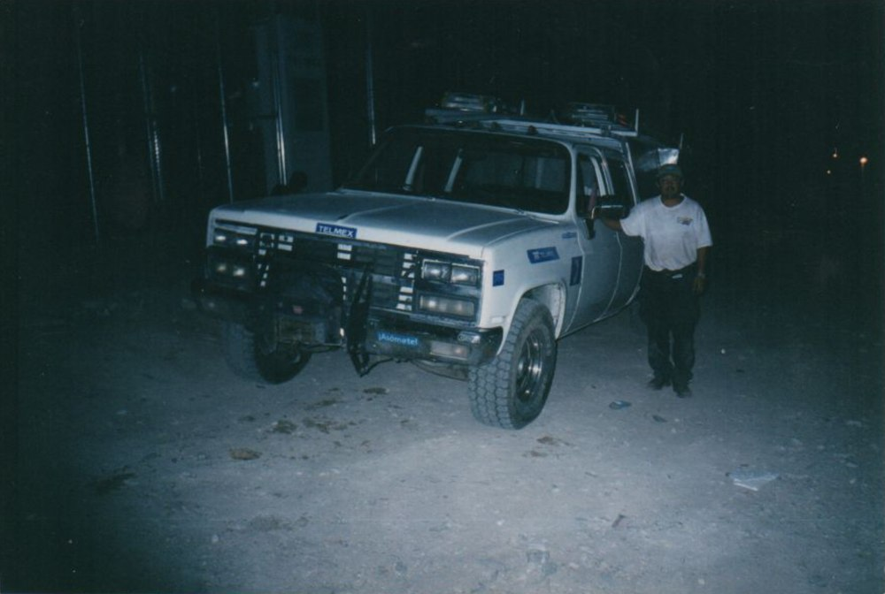
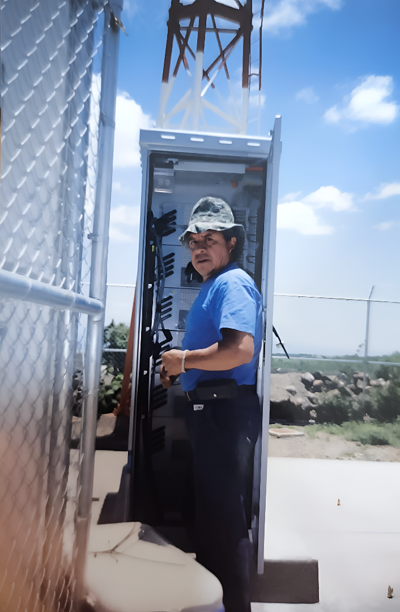
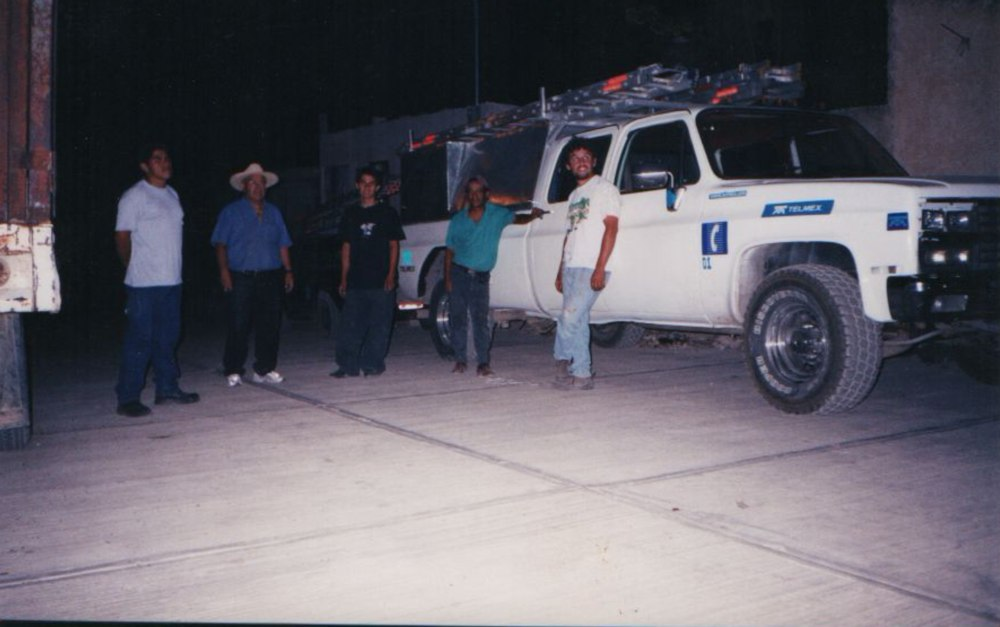
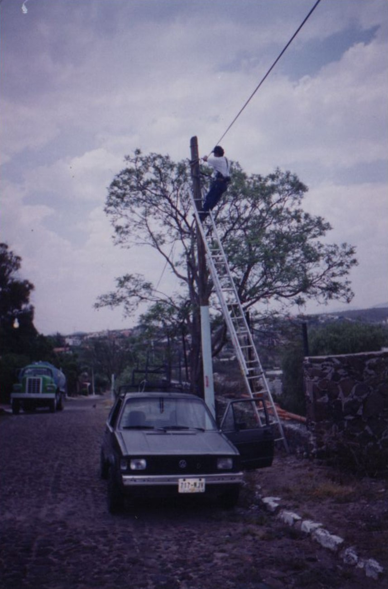
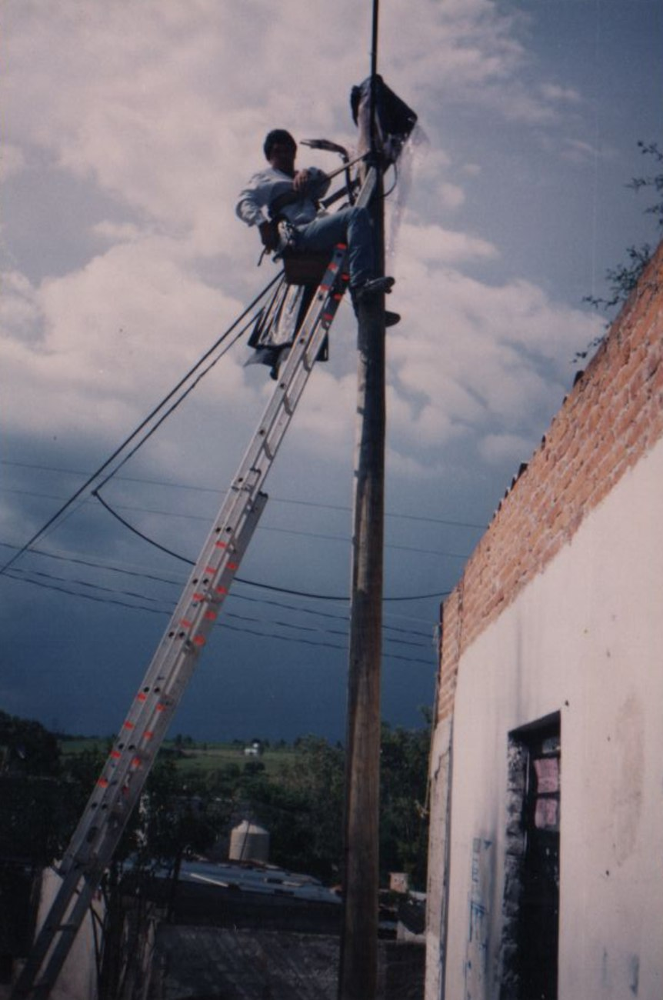
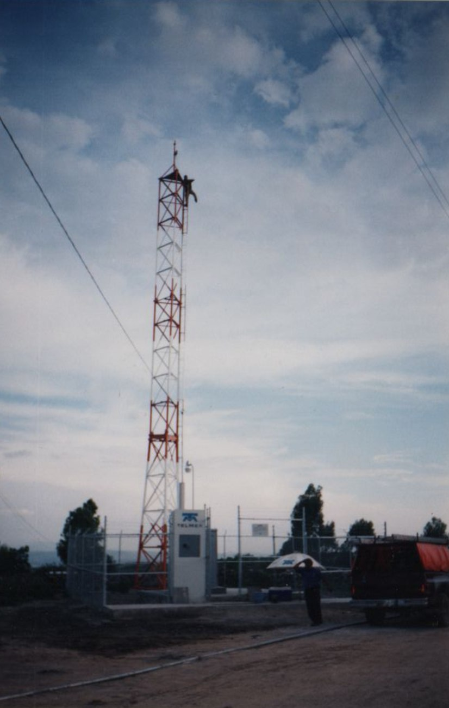

El músculo de las telecomunicaciones en México
Somos el motor técnico y comercial que tu empresa necesita. Ya trabajamos con las empresas de telecomunicaciones más grandes del país, reforzando sus operaciones y potenciando sus resultados a niveles nunca antes vistos. ¿Nuestro objetivo? Dar servicio a todo el territorio mexicano.
Quiénes somos
No operamos nuestra propia red de internet — operamos algo igual de crítico. Somos el socio estratégico de las empresas de telecomunicaciones más grandes de México, como Telmex, Izzi e Infinitum: la fuerza comercial y técnica que estas operadoras despliegan en campo, pero no construyen puertas adentro.
Cuando un operador decide llevar conectividad a una comunidad alejada, nosotros ejecutamos la obra completa: permisos, construcción, red de técnicos y cableado hasta cada domicilio. Somos la diferencia entre un proyecto aprobado en papel y una comunidad conectada en la realidad.
Nuestra operación se extiende también al sector de la construcción, con infraestructura propia de servidores y procesos automatizados que sostienen cada proyecto de principio a fin.
Última milla
Montañas, desierto o zona remota: nos encargamos de hacer llegar la red a todo el territorio mexicano. El terreno no es rival para nuestra operación.
Vista satelital · cobertura en todo el territorio nacional
Servicios
Tres frentes de operación, integrados bajo un mismo estándar corporativo.
Vendedores y técnicos certificados con unidades móviles propias, integrados a los estándares operativos de las principales operadoras del país.
Permisos, construcción y tendido de red hasta el domicilio, en colaboración con los operadores, para llevar conectividad a comunidades alejadas.
Servidores propios para el resguardo de información de clientes, con procesos operativos automatizados de principio a fin.
También participamos en el sector de la construcción en México, con proyectos que se integran a nuestra misma capacidad operativa y logística.
Cobertura
Una sola operación con presencia activa en todo el territorio nacional.
Representación esquemática, no cartográfica
Preguntas frecuentes
Somos socio operativo estratégico de empresas líderes como Telmex, Izzi e Infinitum, aportando personal comercial y técnico propio bajo sus estándares de operación.
El operador aporta la infraestructura de red; nosotros ejecutamos la obra: gestión de permisos, construcción, red de técnicos y cableado hasta cada domicilio.
Operamos en el norte, centro y sur del país, con unidades móviles de despliegue rápido y personal distribuido para atender proyectos con flexibilidad operativa.
Nuestra historia
Nuestra trayectoria habla por sí sola: dominamos el campo y conocemos las formas correctas para cumplir nuestros objetivos, sin importar qué obstáculo se atraviese en el camino.


Comunicaciones PESA nace hace más de 20 años gracias a Luis Peña, quien dada su gran destreza en el área convocó a un grupo de técnicos en Jalisco junto con su hijo, Javier Peña. En conjunto, acercaron a numerosas comunidades a servicios de excelencia. Con los años, expandimos nuestras operaciones hasta cubrir todo lo que requiere el campo de las telecomunicaciones en México, buscando que cada vez más familias mexicanas tengan una red digna.

Comunicaciones PESA es la prueba de que el tiempo no solo se transforma en experiencia — también se transforma en confianza, profesionalismo y una atención excepcional al detalle.

¿Te gustaría formar parte de esta historia?


Contacto
Av. Monte de las Cruces 647, Las Maromas, Cuajimalpa de Morelos, 05710 Ciudad de México, CDMX
.png)